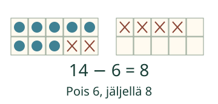
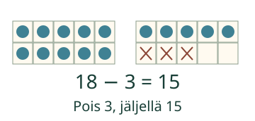

Aava antaa simpukoita pois.
Lasken, montako jää.
Voit vastata suoraan tai käyttää kymppiä apuna.
Miten tämä lasketaan?
Ensin kymppiin
14 − 6. Laita 14 nappia kahteen kymppikehykseen. Ota ensin 4 pois: jää 10. Kuudesta on vielä 2 ottamatta. 10 − 2 = 8. Neljä ja kaksi ovat yhteensä kuusi.

Aina ei tarvitse mennä kymppiin
18 − 3 = 15. Kahdeksasta irtonaisesta riittää kolme pois. Täysi kymppi jää paikalleen. Pelkkä 5 ei ole vastaus: myös kymmenen on mukana.

Ennakoi: jääkö 13 − 5 yli vai alle kymmenen?
Katso ajatus
Alle. Ensin 3 pois vie kymppiin, sitten vielä 2 pois: 8.
Myös yhteenlasku auttaa
6 + 8 = 14. Siksi 14 − 6 = 8. Voit laskea pois, täydentää tai käyttää tuttua laskua. Tärkeää on sama määrä.
Kokeile itse
13 − 5. Montako jää?
Tarvitsen vihjeen
Laske ensin, paljonko pääset kymppiin. Jaa pois otettava määrä kahteen osaan. Tarkista lopuksi yhteenlaskulla.
Kokeilen omaa jakoa
Voit harjoitella yhtä välivaihetta. Se ei ole pakollinen reitti lopputulokseen.
Jaa pois otettava 5 kahteen osaan. Minkä otat ensin ja minkä sitten?
Kokeile toisessa tilanteessa
16 tarraa, 9 pois. Voit ottaa ensin 6 ja sitten 3. Tai mieti: 9 ja montako on 16? Molemmat antavat 7.
Opettajalle ja ilman ruutua
Luokat 1–2. Ydinesitieto M-ADD-FACT-01. Kymmenen ja irtonaisten rakenne näytetään, ei oleteta uutta kovaa esitietoa. Koko tuettu lukualue 0–20, pois otettava enintään lähtömäärä. Ei negatiivisia tuloksia. Kympin kautta laskeminen on hyödyllinen tapa, ei pakollinen vastausreitti. Vapaa osiinjako hyväksyy kaikki kaksi ei-negatiivista osaa, joiden summa on pois otettava määrä.
Käytä 20 nappia ja kahta samanlaista kymppikehystä. Anna siirtää pois 4 ja sitten 2. Peitä ratkaistu kuva ja kokeile 13−5. Älä vaadi nappien nimeämistä, ääneen laskemista tai joka kappaleen napauttamista.
Yksi vastaus tai tuettu osiinjako ei todista laskusujuvuutta, itsenäistä tai viivästettyä osaamista. Palaute koskee vain nykyistä paikallista vastausta. Ei aikarajaa, puhe-, kuuntelu-, nimeämis- tai klikkausjärjestyspakkoa eikä henkilöhistoriaa. Malli ja vihje ovat tukea, eivät itsenäisen tai viivästetyn hallinnan näyttö. Tarkistin hyväksyy kokonaisluvun samanarvoisilla etunollilla, plusmerkillä ja desimaaliosan nollilla. Tarkistin ei pyöristä. Enintään 128 merkkiä/kenttä.
Lopuksi: Miten voit tarkistaa laskun 15−8 yhteenlaskulla?